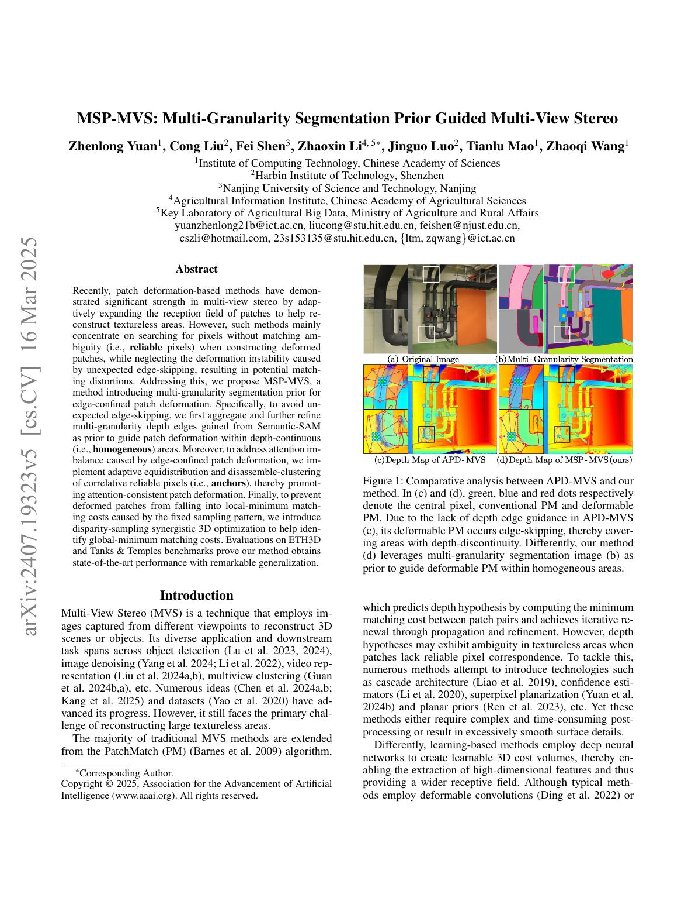
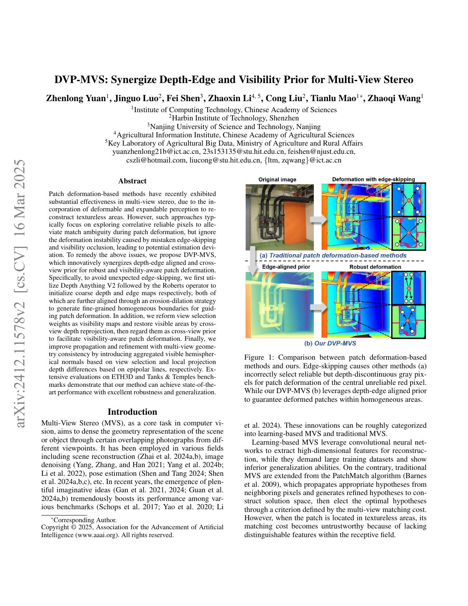
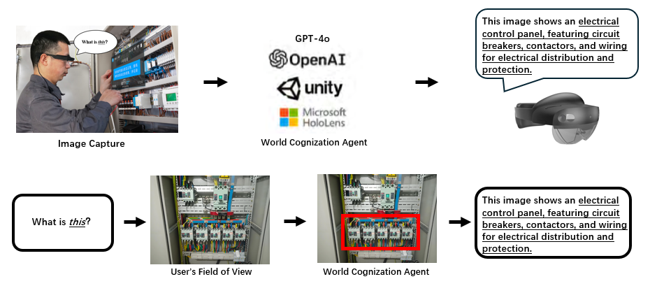
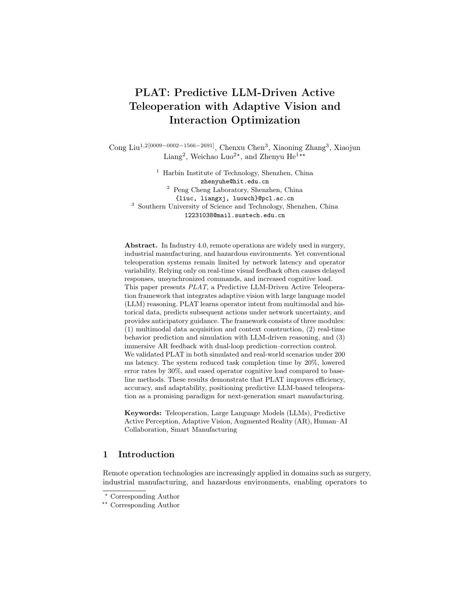
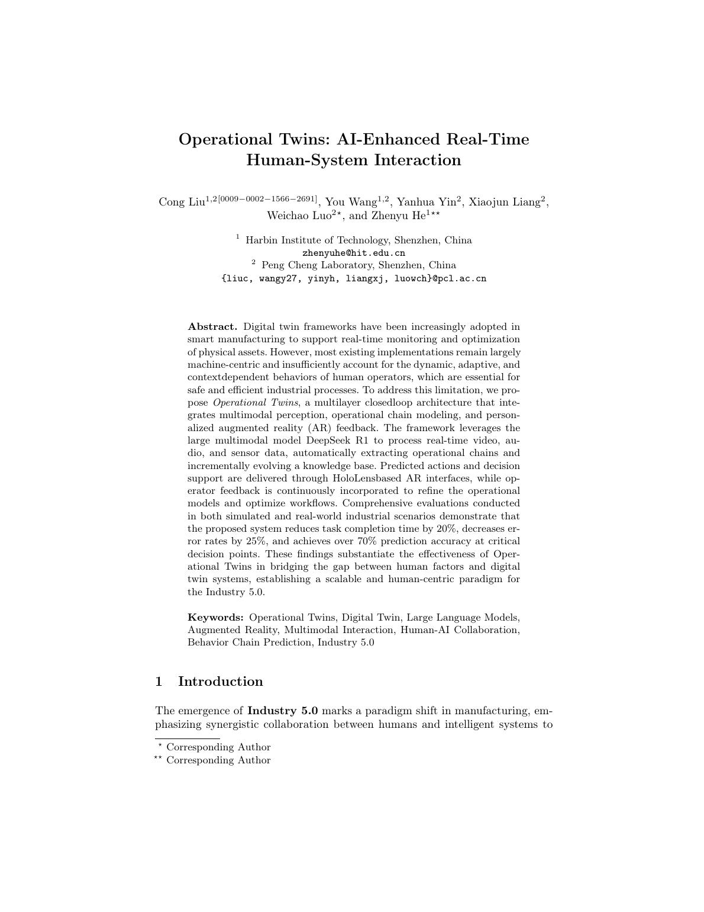
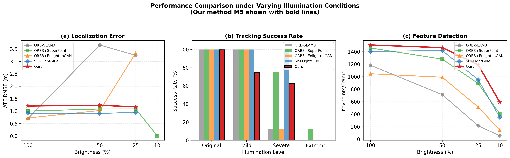
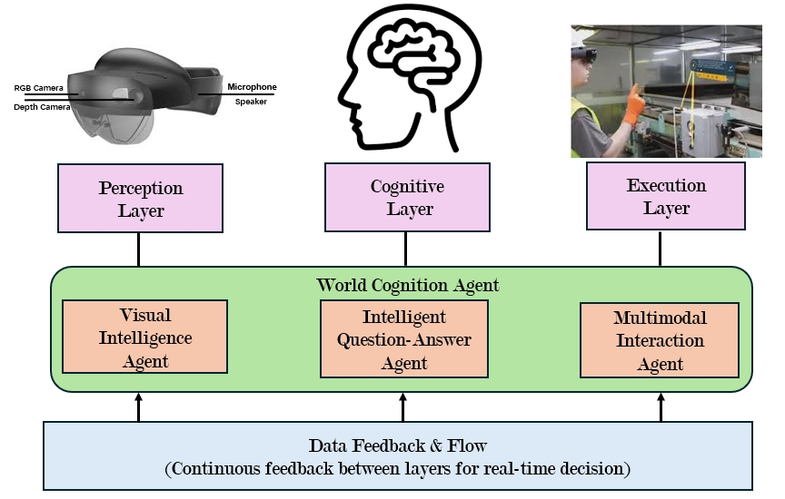
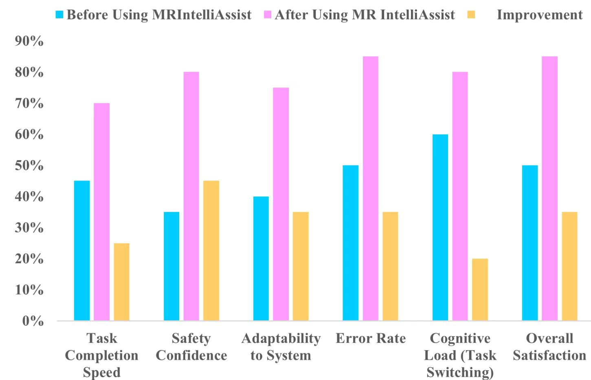
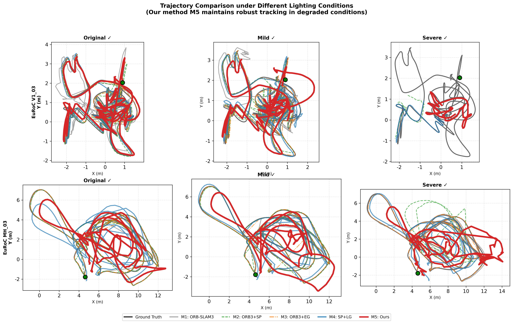

IEEE IAEAC 2024 · EI
BundledSLAM: An Accurate Visual SLAM System Using Multiple Cameras
Multiple-camera visual SLAM system for improved accuracy and robustness.
Research Portfolio
A project-page style publication hub for Cong Liu's research outputs, built from local paper PDFs, figures, and thesis publication records.
Featured Project
A light-aware deep front-end for robust visual SLAM under challenging illumination, using enhancement, deep feature detection, and learned matching as a co-designed pipeline.

The method treats low-light degradation as a geometric feature distribution problem. It combines illumination-adaptive enhancement, SuperPoint keypoints, and LightGlue matching to stabilize tracking in severe brightness degradation.
Published or Accepted
This list follows the local thesis publication record and separates published or accepted papers from under-review and planned work.
IEEE IAEAC 2024 · EI
Multiple-camera visual SLAM system for improved accuracy and robustness.
IEEE ACIRS 2024 · EI · Oral
Stereo visual-inertial initialization study focused on translation accuracy improvements.
CEI 2024 · EI
Combines 3D Gaussian primitives and depth priors to support SLAM and novel view synthesis.

AAAI 2025 · CCF-A
Multi-view stereo method that integrates depth-edge and visibility priors.
Open PDF
AAAI 2025 · CCF-A
Multi-view stereo method guided by multi-granularity segmentation priors.
Open PDF
HCII 2025 · Accepted
Mixed-reality assistant centered on world cognition agents and adaptive human-AI industrial collaboration.
Open PDF
HCII 2025 · Accepted
Predictive LLM-driven teleoperation framework with adaptive vision and interaction optimization.
Open PDF
HCII 2025 · Accepted
Extends digital twins toward operational twins for real-time interaction and adaptive decision support.
Open PDF
Machines · Published · JCR Q2
Robust visual SLAM front-end for challenging illumination using enhancement, SuperPoint, and LightGlue.
Open PDFIEEE-CCSSTA 2025 · EI
Mixed-reality platform for multi-user control and collaborative interaction with industrial digital twins.
Open PDFUnder Review and In Preparation
ACM Multimedia 2026 submission related to dynamic-scene handling in Photo-SLAM.
Planned for IEEE Transactions on Robotics.
Planned for IEEE Robotics and Automation Letters.
Planned for IEEE Transactions on Industrial Informatics.


